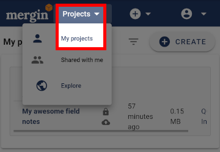
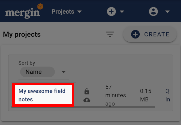
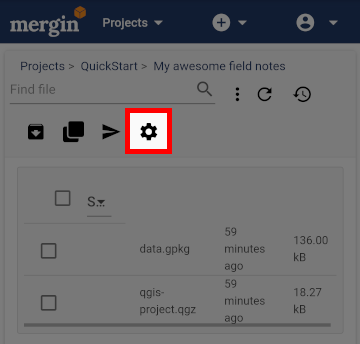
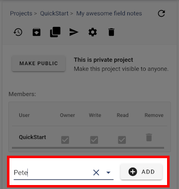
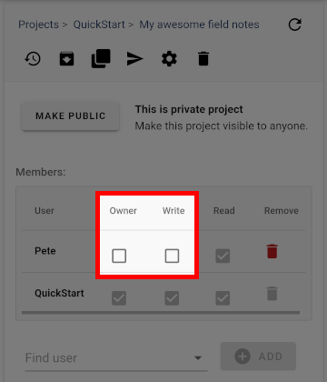

Share Your Project
- Take the Tour
- Create a Project
- Put it on Your Device
- Sync Your Changes
- Share Your Project
Now you know how to create a project, get it onto your mobile, make changes and sync them back to Mergin. Let’s now see how we can share our project with others.
These settings are made through the Mergin website.
- When logged-in to Mergin, locate My projects

- Press on the project you want to share

- Press the settings button to access sharing settings

- Use search tool to find the user you wish to share the project with and press ADD to grant access.

So far the user we just added will have read permission. From here we could also grant them write permissions or owner permissions. Owner permission means they will also be able to adjust sharing settings on the project.

From here you can also use the MAKE PUBLIC button to make the project public. This makes the project readable by any user. If you wanted people to have write access to the project you’d still need to explicitly share it with them and grant them write access though.
That’s the end of the Quick Start Guide but there’s loads more information in the main documentation such as how to carry out a typical Input workflow:
-
Preparing project: user loads background and survey layers, set up the forms, apply styling to the layers, set up map themes and define the layers to be used for survey purpose. See Project preparation
-
Data/project transfer: once the project set up, users need to transfer data to the device. This can be achieved through Mergin. See Data transfer
-
Working with Input: map navigation, data editing, including filling the forms, viewing existing data and uploading the changes back to Mergin. See Using Input
-
Input user interface: describes various buttons, options and configurations. See Input user interface
- Take the Tour
- Create a Project
- Put it on Your Device
- Sync Your Changes
- Share Your Project